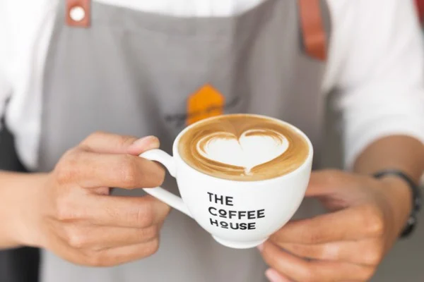

Một tách Latte phảng phất hương vị cà phê là cách bạn "lay nhẹ" bản thân trước khi bắt đầu một ngày dài làm việc. Cùng xem qua cách làm một tách Latte nhé!
LATTE
SỰ THỎA MÃN MÙI VỊ - NHÃN QUAN
Step 1 - Đánh sữa
Tương tự như khi pha Cappuccino, sữa của bạn phải được làm ấm trước khi đưa vào máy đánh. Tuy nhiên, 2/3 thành phần Latte là sữa nên bạn hãy lưu ý điều này để canh lượng sữa thích hợp nhé! Đưa ca sữa vào máy đánh và để máy Macchina thực hiện công việc. Nhớ rằng chúng ta cần một lượng Foam nhiều hơn lượng sữa!

Step 2 - Chuẩn bị Espresso
Nếu đây là lần đầu tiên bạn pha Espresso, hãy nhớ đọc qua bài Espresso của chúng tôi
Step 3 - Latte art
Đưa ca sữa lên hơi cao so với tách Espresso và rót đều tay, bắt đầu từ giữa ly, chuyển động vòng cung dần ra giữa ly để tạo ra Latte art - những hình vẽ được tạo ra khéo léo bằng foam và sữa nóng trên bề mặt ly Latte của bạn.
Từ từ hạ dần độ cao và kết thúc đợt rót sữa khi Latte art cuả bạn thành hình.
So với Cappucinno, Latte là một sự kết hợp tinh tế và nhẹ nhàng hơn - Đó là sự hòa quyện nhịp nhàng của vị béo ngậy của sữa, nhấn nhá vị cà phê thanh thoát và lớp foam dày bồng bềnh.
